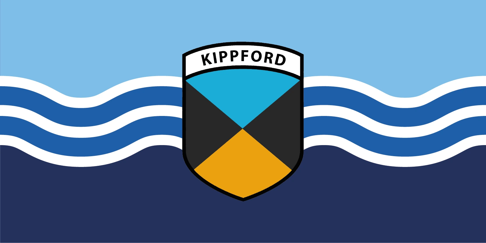
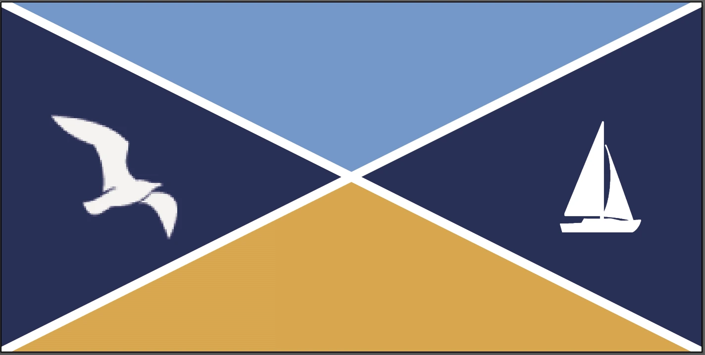
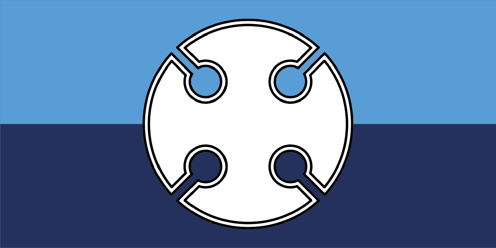
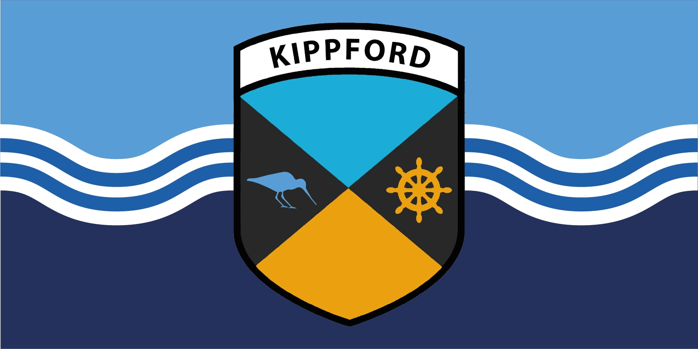
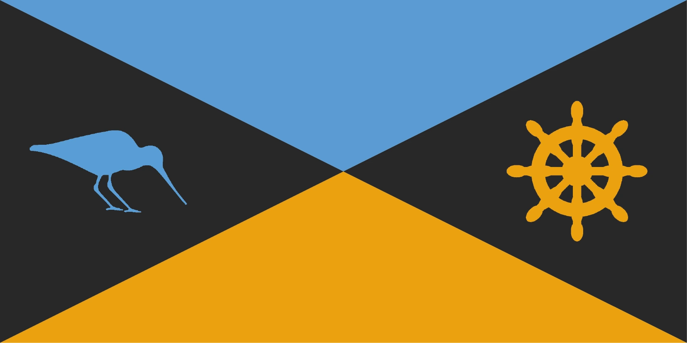
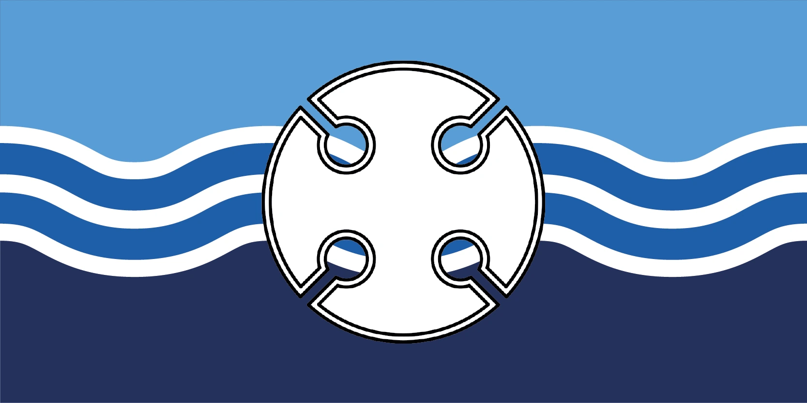

Design · Community
The village flag of Kippford
Kippford is a sailing village on the Solway coast. The community ran a competition for a village flag, so I designed one, and the design was adopted.

The brief
A flag has to read at a distance, in motion, and from both sides, which pushes the design towards a few flat colours and simple geometry. It also has to feel like it belongs to the place, which for Kippford means the water and the boats.
The iterations
I worked through eleven numbered proposals across three families: the crest over water, a set of geometric designs using a wading bird and a ship's wheel, and a rounded cross device. The adopted design was proposal four, from the crest family.





